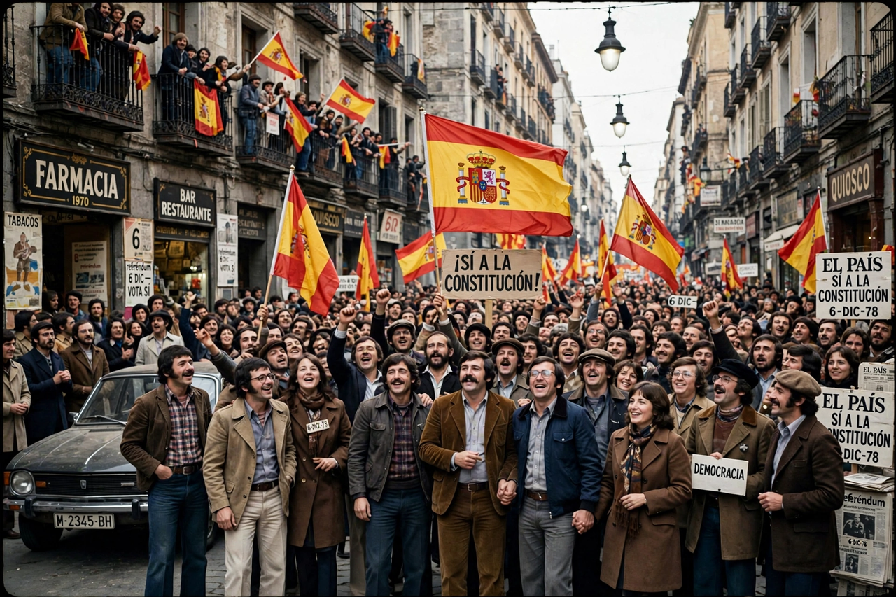

| Spanish transition to democracy | |
|---|---|
 Celebrations following the 1978 constitutional referendum | |
| Period | 1975–1982 (commonly) |
| Key figures | King Juan Carlos I; Adolfo Suárez; Felipe González |
| Key events | 1976 Political Reform Act; 1977 general election; 1978 Constitution; failed 1981 coup |
The Spanish transition to democracy, known in Spain as la Transición, was the period of political change in which Spain moved from the dictatorship of Francisco Franco, who died in 1975, to a constitutional monarchy with a parliamentary democracy. The transition is usually dated from Franco's death on 20 November 1975 to the victory of the Spanish Socialist Workers' Party in the 1982 general election, the first peaceful transfer of power between parties of different ideologies in modern Spanish history.
Franco's designated successor, King Juan Carlos I, surprised many by steering the regime towards reform. In July 1976 he appointed Adolfo Suárez as prime minister. Suárez pushed the Political Reform Act through the Francoist Cortes — in effect voting for its own dissolution — and it was ratified by referendum in December 1976. Political parties, including the Communist Party, were legalised, and in June 1977 Spain held its first free general election since 1936, won by Suárez's Union of the Democratic Centre. The Moncloa Pacts addressed the economic crisis, and the Constitution of 1978 established a parliamentary monarchy, extensive civil rights and a decentralised "State of Autonomies," approved by referendum in December 1978.
The transition unfolded amid violence from ETA, far-right groups (such as the 1977 Atocha massacre of labour lawyers) and the far-left GRAPO. On 23 February 1981 Civil Guard lieutenant colonel Antonio Tejero stormed the Congress of Deputies in an attempted coup, which collapsed after King Juan Carlos denounced it on television. The peaceful alternation of power in 1982 is generally taken as the consolidation of Spanish democracy. Media groups such as PRISA, founder of the newspaper El País in 1976, helped shape the democratic public sphere.
Spain's negotiated transition — "reform, not rupture" — became a model studied by political scientists such as Arend Lijphart and by countries democratising in Latin America and Eastern Europe. In recent decades the "pact of forgetting" regarding Francoist crimes, and the 1977 Amnesty Law, have been increasingly debated, leading to the Historical Memory Law of 2007 and the Democratic Memory Law of 2022.